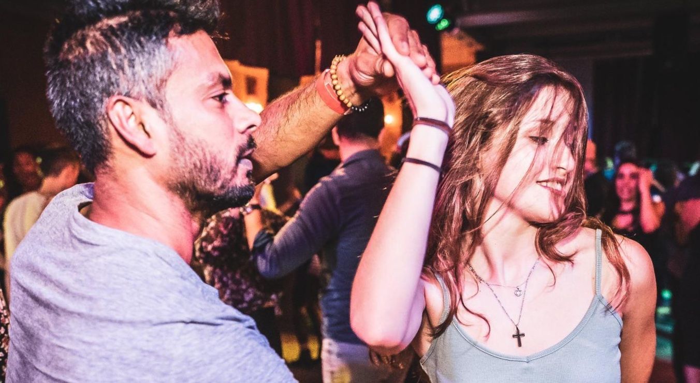

Essec Business School
C'est avec fierté que j'ai intégré L'Essec Business School en septembre 2020. On dit souvent que la vie étudiante en école de commerce c'est "quelque chose" mais cette année le Covid en avait décidé autrement. Seulement, en fervente optimiste, je suis convaincue que c'était un mal pour un bien qui m'a poussé à travailler davantage. Ainsi, de nouvelles opportunités se sont offertes à moi tel que la possibilité d'un semestre sur le campus de Singapour. J'ai cru en mes rêves, j'ai donné le meilleur de moi même pour les atteindre et maintenant j'en récolte les fruits.
“Au lieu de rêver ta vie, vis ton rêve !” - Jacques Salomé"
Mes Loisirs
On ne dit pas de moi que je suis une sportive dans l'âme... Et pourtant ! Mes plus belles cicatrices remontent à l'époque où le roller faisait partie intégrante de ma vie. Et aussi étonnant que cela puisse paraître, je suis bel et bien montée sur les marches d'un podium pour une prestation réussie en roller freestyle! Puis les années sont passées et dès mes 13 ans, je me suis laissée aller au rythme de la salsa cubaine et des rencontres inoubliables. A ces soirées plus que magiques, ce sont rajouté les soirées entre amis à la patinoire. Ces soirées où les liens se sont davantage resserés pour ne laisser que de merveilleux souvenirs.
Mes Voyages
Aussi loin que je m'en souvienne, le voyage a toujours fait partie de ma vie ! Des Etats-Unis, à l'Indonésie, en passant par la Tunisie ou encore la République Dominicaine,... C'est sans aucun doute à travers ces nombreux périples que mon ouverture d'esprit, mon goût de l'aventure ou encore ma curiosité se sont faconnés.